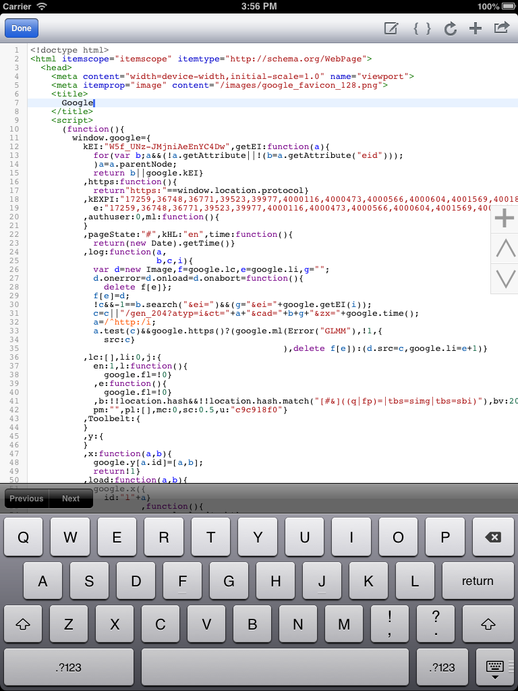

<link rel="import" href="../bower_components/polymer/polymer.html">
<!--
<link rel="import" href="../bower_components/font-roboto/roboto.html">
-->
<link rel="import" href="../bower_components/core-drawer-panel/core-drawer-panel.html">
<link rel="import" href="../bower_components/core-header-panel/core-header-panel.html">
<link rel="import" href="../bower_components/core-toolbar/core-toolbar.html">
<link rel="import" href="../bower_components/core-icons/core-icons.html">
<link rel="import" href="../bower_components/paper-icon-button/paper-icon-button.html">
<link rel="import" href="../bower_components/paper-fab/paper-fab.html">
<link rel="import" href="../bower_components/core-item/core-item.html">
<link rel="import" href="../bower_components/paper-icon-button/paper-icon-button.html">
<link rel="import" href="../bower_components/paper-item/paper-item.html">
<link rel="import" href="../bower_components/paper-toast/paper-toast.html">
<link rel="import" href="../bower_components/paper-shadow/paper-shadow.html">
<link rel="import" href="../bower_components/paper-ripple/paper-ripple.html">

<polymer-element name="mihtool-main">
  <template>
   <link rel="stylesheet" href="../resources/css/mihtool-main.css">
   <core-drawer-panel id="drawerPanel" responsiveWidth="2048px" narrow="{{narrow}}">
      <core-header-panel drawer  mode="standard">
        <header>
          
        </header>
        <core-menu selected="0" selectedItem="{{item}}">
          <core-item><a href="../#overview">Overview</a></core-item>
          <core-item><a href="../#get-started">Get Started</a></core-item>
          <core-item><a href="../#donation">Donation</a></core-item>
          <core-item><a href="../#post-about">Posts about MIHTool</a></core-item>
          <core-item><a href="../#features">Features</a></core-item>
          <core-item><a href="../#supports">Support and bug reports</a></core-item>
          <core-item><a href="../#thanks">Thanks</a></core-item>
          <core-item><a href="../#videos">Videos</a></core-item>
          <core-item><a href="../#screenshots">Screenshots</a></core-item>
        </core-menu>
      </core-header-panel>
      <core-header-panel main mode="waterfall-tall">
        <core-toolbar class="{{ {tall : !narrow} | tokenList }}">
          <paper-icon-button icon="menu" on-click="{{toggleDrawer}}"></paper-icon-button>
          <header>
            <h1>MIHTool</h1>  
            <summary flex>iOS Web Debugger Pro</summary>
          </header>
        </core-toolbar>
        <section class="content" vertical layout center>
          <section class="slogon" id="overview" horizontal layout>
            
            <h2 flex>MIHTool helps Front-End Engineers to debug and optimize their webpages on iPad and iPhone</h2>
          </section>
          <section id="get-started">
            <header><h2>Get Started</h2></header>
            <section>
              <ul>
                <li><a href="https://itunes.apple.com/us/app/mihtool/id584739126?ls=1&mt=8">View in App Store(Basic)</a></li>
                <li><a href="https://itunes.apple.com/us/app/mihtool-web-debugger-pro-fee/id599482707?ls=1&mt=8">View in App Store(Pro)</a></li>
                <li><a href="https://groups.google.com/group/mihtool">MIHTool Google group(Feedback)</a></li>
              </ul>
            </section>
          </section>
          <section id="donation">
            <header><h2>Donation</h2></header>
            <section>
              <p>MIHTool will always be free!If you love MIHTool and you do like to help me out,I’ll appreciate you could&nbsp;<a href="https://itunes.apple.com/us/app/mihtool-web-debugger-pro-fee/id599482707?ls=1&amp;mt=8">buy&nbsp;one</a>!There is no difference between <a href="https://itunes.apple.com/us/app/mihtool/id584739126?ls=1&amp;mt=8" target="_blank">the Basic one</a> and <a href="https://itunes.apple.com/us/app/mihtool-web-debugger-pro-fee/id599482707?ls=1&amp;mt=8" target="_blank">the Pro one</a>.All the money will be use for MIHTool’s server.</p>
            </section>
          </section>
          <section id="post-about">
            <header><h2>Posts about MIHTool</h2></header>
            <section>
              <ul>
                <li>Paul Bakaus(Studio 5 CTO at Zynga) :&nbsp;<a href="http://paulbakaus.com/tutorials/performance/mihtool-the-ios-web-debugger/">MIHTool, the iOS web debugger</a></li>
                <li>GoogleDevelopers :&nbsp;<a href="https://www.youtube.com/watch?v=jXqrgtm-yF8">Mobile Web Thursday : Dev Tools</a></li>
                <li>Google I/O 2013 :&nbsp;<a href="https://developers.google.com/events/io/sessions/324558168">The Modern Workflow for Developing the Mobile Web</a>&nbsp;(By&nbsp;<a href="http://gauntface.co.uk/">Matt Gaunt</a>),&nbsp;<a href="http://io13mobileworkflow.appspot.com/">Slide</a></li>
                <li>Frontrend in Tokyo :&nbsp;<a href="https://speakerdeck.com/addyosmani/mobile-web-development-workflow">Mobile Web Development Workflow</a>&nbsp;(by<a href="http://addyosmani.com/"> Addy Osmani</a>)</li>
                <li>Jan Polzer: <a href="http://www.maxiorel.cz/jak-na-vzdalene-ladeni-webu-na-ipadu-pomoci-mihtool">Jak na to – vzdálené ladění webu na iPadu pomocí MIHTool</a></li>
                <li>Tribo do C.I.Podcast :&nbsp;<a href="http://tribodoci.net/artigos/mihtool-faca-os-seus-aplicativos-web-para-ios-acontecer/">MIHTOOL: FAÇA OS SEUS APLICATIVOS WEB PARA IOS ACONTECER</a></li>
                <li>Yuka :&nbsp;<a href="http://jucke.com/webdev/mihtool-ios-web-debugger/">MIHTool: iOS web debugger</a></li>
                <li>unbug :&nbsp;<a href="http://www.iunbug.com/archives/2013/03/17/767.html">与大家分享MIHTool的开发心得</a></li>
                <li>InfoQ :&nbsp;<a href="http://www.infoq.com/cn/news/2013/03/mihtool-interview">iOS Web开发调试工具MIHTool作者访谈</a></li>
              </ul>
            </section>
          </section>
          <section class="features" id="features">
            <header><h2>Right Now</h2></header>
            <section>
              <h4>For iPad</h4>
              <p>1.Inline Web inspector(like Chrome DevTool or FireBug):With Elements,Resources,Network,Timeline,Console panel.</p>
              <p>2.Web inspector remote(weinre):remote to debug and optimize your mobile webpages on your computer(window,mac,linux with chrome).</p>
              <p>3.Online Web Inspector.</p>
              <p>4.HTML editor:view webpage source code with syntax highlighting and formatting;editing source code or creare a new webpage and preview the result.</p>
              <p>5.Remote control(With HTTP Server):Remote to,Load URL in MIHTool|Safari|Chrome;Inject Javascript in current webpage;Clear website data;Get HAR data;Get source code;Get screenshots…</p>
              <p>6.Show WebKit Debug Borders(Compositing Render Layers).</p>
              <p>7.Show Webkit Repaint Counter(Paint Rects).</p>
              <p>8.Emulate iPhone.</p>
              <p>9.User agent switcher.</p>
              <p>10.More developer bookmarklets:Firebug,YSlow,JS Console,PageSpeed,GTmetrix…</p>
              <p>11.Evaluating JavaScript in the address bar.</p>
              <p>12.Full screen mode(Shake Device To Toggle Full Screen Mode).</p>
              <p>13.Disable cache.</p>
              <p>14.Clear history,clear cache,clear cookies, clear local storage.</p>
              <p>15.Keep awake(Default is ON).</p>
              <p>16.HAR Viewer.(Also see logproxy)</p>
              <p>17.Performance API.</p>
              <p>18.Polyfill Manager(simulate APIs for javaScript to Objective-C communication)</p>
            </section>
            <section>
              <h4>For iPhone</h4>
              <p>1.Web inspector remote(weinre):remote to debug and optimize your mobile webpages on your computer(window,mac,linux with chrome).</p>
              <p>2.Online Web Inspector.</p>
              <p>3.Remote control(With HTTP Server):Remote to,Load URL in MIHTool|Safari|Chrome;Inject Javascript in current webpage;Clear website data;Get HAR data;Get source code;Get screenshots…</p>
              <p>4.Show WebKit Debug Borders(Compositing Render Layers).</p>
              <p>5.Show Webkit Repaint Counter(Paint Rects).</p>
              <p>6.Evaluating JavaScript in the address bar.</p>
              <p>7.Disable cache *when the switch button is ON*.</p>
              <p>8.Full screen mode(Shake Device To Toggle Full Screen Mode).</p>
              <p>9.Keep awake(Default is ON).</p>
              <p>10.Performance API.</p>
              <p>11.Polyfill Manager(simulate APIs for javaScript to Objective-C communication)</p>
            </section>
          </section>
          <section id="supports">
            <header><h2>Support and bug reports</h2></header>
            <section>
              <p>Community discussion, questions, and informal bug reporting is done on the&nbsp;<a href="https://groups.google.com/group/mihtool">MIHTool&nbsp;Google group</a>.Please feel free to twitter me&nbsp;<a href="https://twitter.com/unbug">@unbug</a>&nbsp;,E-mail:&nbsp;<a href="mailto:tidelgl@gmail.com?subject=About MIHTool">tidelgl@gmail.com</a></p>
            </section>
          </section>
          <section id="thanks">
            <header><h2>Thanks</h2></header>
            <section>
              <ul>
                <li><a href="http://paulbakaus.com/" target="_blank">Paul Bakaus</a>(Studio 5 CTO at Zynga)’s features guidance</li>
                <li>App Icon designed by&nbsp;<a href="https://twitter.com/Rude" target="_blank">Rude</a>(Graphic and interaction design specialist at Mortensen)</li>
              </ul>
            </section>
          </section>
          <section id="videos">
            <header><h2>Videos</h2></header>
            <article>
              <h4>Inline web inspector</h4>
              <iframe width="640" height="480" src="//www.youtube.com/embed/I-joxZbdk0s" frameborder="0" allowfullscreen></iframe>
            </article>
            <article>
              <h4>Polyfill Manager(simulate APIs for javaScript to Objective-C communication)</h4>
              <iframe width="640" height="480" src="//www.youtube.com/embed/uL2feHKevRE" frameborder="0" allowfullscreen></iframe>
            </article>
          </section>
          <section class="screenshots" id="screenshots">
            <header><h2>Screenshots</h2></header>
            <article>
              <h4>Inline web inspector</h4>
              
            </article>
            <article>
              <h4>Emulate iPhone & Debug borders</h4>
              
            </article>
            <article>
              <h4>View source code & HTML editor</h4>
              
            </article>
            <article>
              <h4>Web inspector remote</h4>
              
            </article>
            <article>
              <h4>Remote control commands</h4>
              
            </article>
            <article>
              <h4>HAR Viewer & waterfall</h4>
              
            </article>
            <article>
              <h4>For iPhone</h4>
              
            </article>
            <article>
              <h4>For iPhone & debug borders</h4>
              
            </article>
            <article>
              <h4>For iPhone & web inspector remote</h4>
              
            </article>
          </section>
        </section>
      </core-header-panel>
    </core-drawer-panel>
</template>
<script>
 Polymer('mihtool-main', {
   toggleDrawer: function() {
      this.$.drawerPanel.togglePanel();
    }
 });
</script>
</polymer-element>